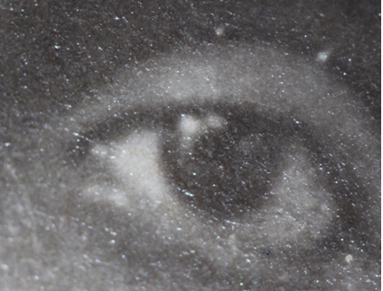
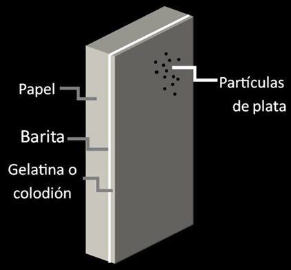
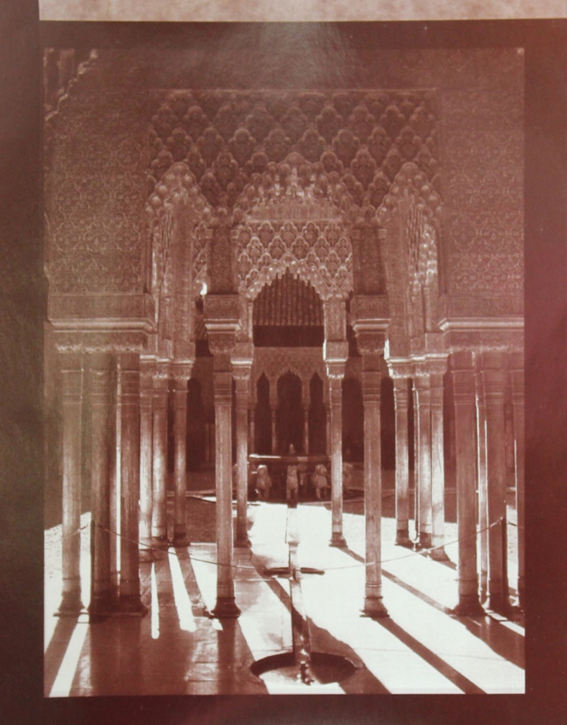

Aristotipos
(1860-1940)
- superficie brillante o mate;
- tonos cálidos, usualmente cafés, pero puede haber violáceos o grises cálidos, dependiendo del entonante. Presentan tres capas en su estructura: soporte-barita- aglutinante;
- no es posible ver las fibras del papel;
- el colodión puede presentar iridiscencia en la superficie de la fotografía.



Gelatina
Amarillamiento. Por la degradación de la gelatina y el cambio de la morfología de las partículas de plata, ya sea por un ambiente oxidante o por la formación de sulfato de plata (resultado de un fijador agotado, lavado insuficiente o contaminantes atmosféricos).
Desvanecimiento. Este proceso es resultado de la oxidación de la partícula de plata. Suele comenzar en las áreas de altas luces de la imagen, debido a que es donde existen menos partículas de plata, y su tamaño es menor.
Colodión
Craqueladuras. Aparecen debido a que el colodión no suele tener movimientos de expansión y contracción, a diferencia del soporte de papel.
Abrasión. Se puede presentar en ambos aglutinantes, pero el colodión es más susceptible a este deterioro que la gelatina, y fácilmente puede ser rayado y sobrepasado, dejando ver la barita.
- almacenar en guardas de papel o plástico de buena calidad, sin texturas rugosas y químicamente estables;
- el lugar de almacenamiento debe tener más de 30% y menos de 60% de humedad relativa;
- la temperatura debe mantenerse 18°C o menos;
- evitar contaminantes ambientales.
Es común encontrar aristotipos en colecciones; sin embargo, debido a la similitud de sus características físicas, es difícil definir si se trata de una impresión de gelatina o de colodión, al menos que exista iridiscencia o deterioros característicos.
Descripción
Se componen por un soporte de papel con recubrimiento de barita que da una superficie suave y blanca (para aumentar la definición de la imagen), sobre la que se coloca una capa de aglutinante con las sales de plata. El aglutinante puede ser colodión o gelatina.
Como citar esta colaboración:
Apellido, nombre (año), “Título del artículo”, en Archivo Churubusco, año 1, número 2, disponible en -dirección en internet-, consultado -día, mes, año-.